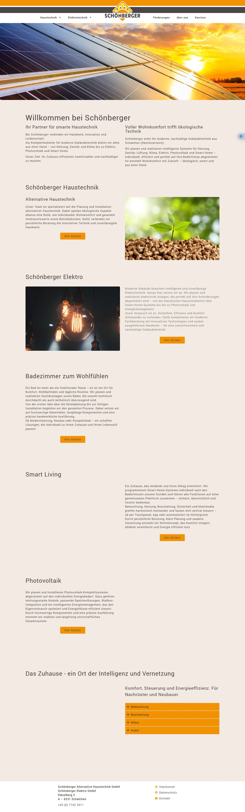

Schönberger Haustechnik – Vorher / Nachher
Entwurf zur Ansicht von Thomas Klampfer – keine offizielle Seite der Firma.
Vorher
Nachher
Vorher
www.schoenberger-haustechnik.at

Nachher
neue Seite im ganzen Fenster öffnen